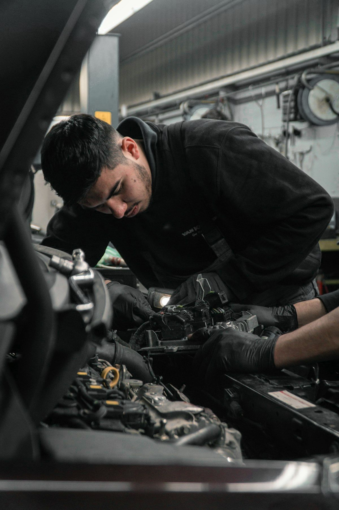

SERVICEサービス紹介
走りを支える整備から、輝きを守るコーティング、日々の洗車まで。お車の状態に合わせて、必要なお手入れをご提案します。


Maintenance
自動車整備
安心して乗り続けるために、
日頃の点検と整備を。
定期的な点検や消耗品の交換は、車の調子を保つための基本です。気になる症状がある場合も、まずはお車の状態を確認し、必要な作業をご説明してから進めます。
※料金・対応内容はお問い合わせください（デモ表記）。


Coating
カーコーティング
塗装面の美しさを、
できるだけ長く保つために。
洗車だけでは落としきれない汚れや小傷の状態を確認し、下地を整えてからコーティングを施工します。施工後のお手入れ方法についても、あわせてご案内します。
※料金・施工内容・仕上がりはお車の状態により異なります。詳しくはお問い合わせください（デモ表記）。


Car Care
洗車・カーケア
清潔な状態を保つことが、
愛車を長く楽しむ第一歩。
ボディの汚れはもちろん、ホイールやタイヤまわりなど、見落としがちな部分まで丁寧に洗浄します。日常のお手入れとして、お気軽にご利用ください。
※料金・対応内容はお問い合わせください（デモ表記）。
Contact
まずはお気軽にご相談ください。
「どのサービスが合うか分からない」という段階でも大丈夫です。お車の状態やご希望をお聞きしたうえでご案内します。